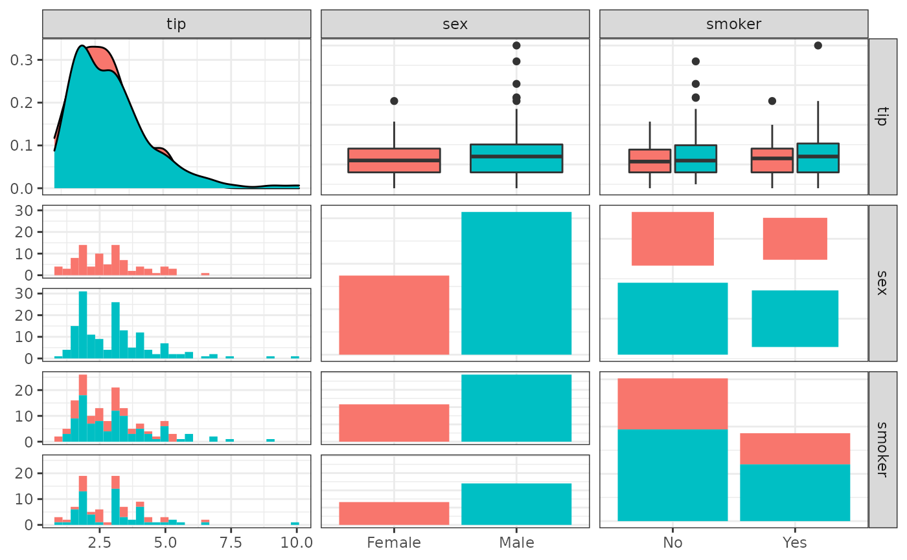
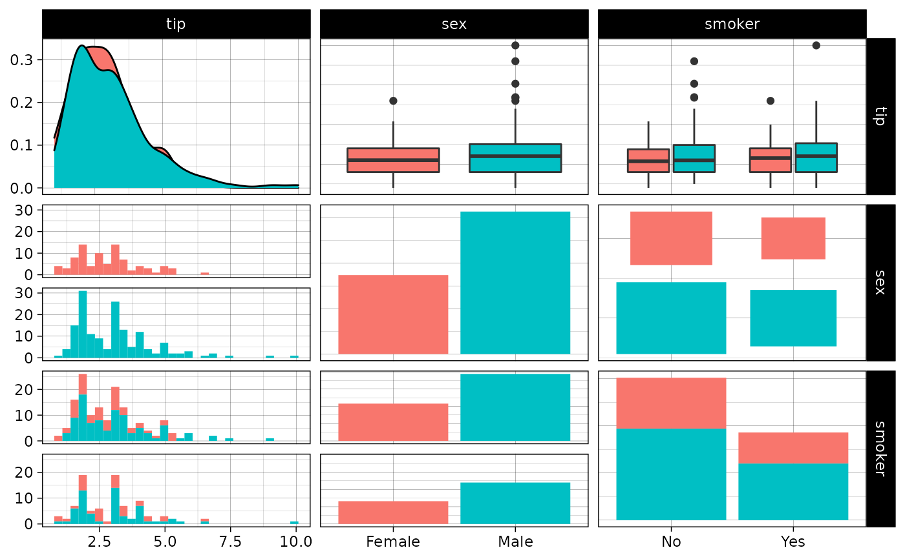
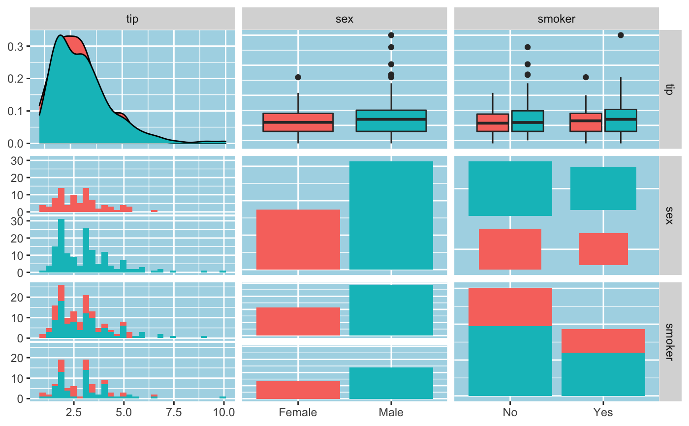
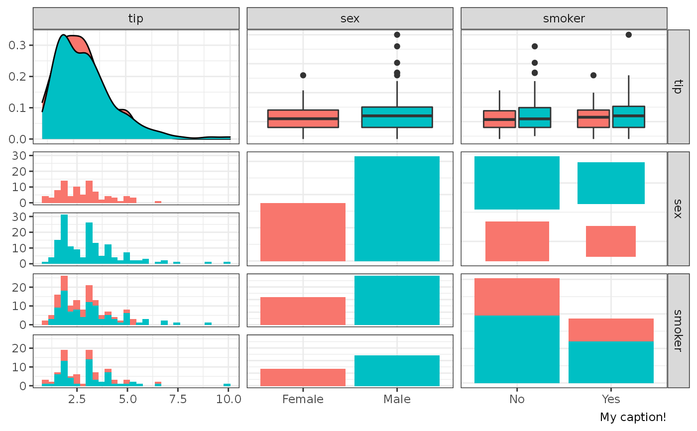
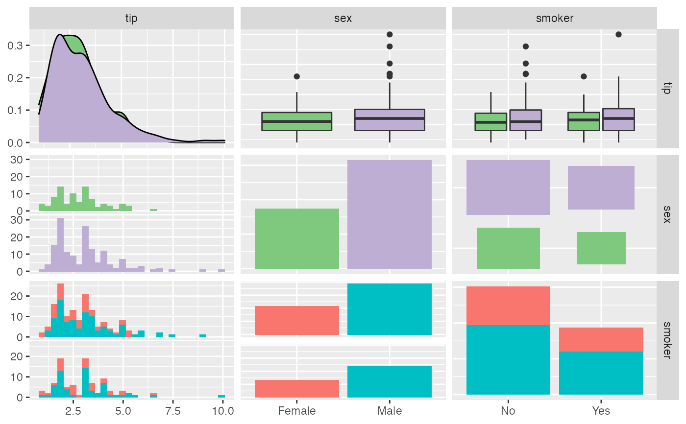
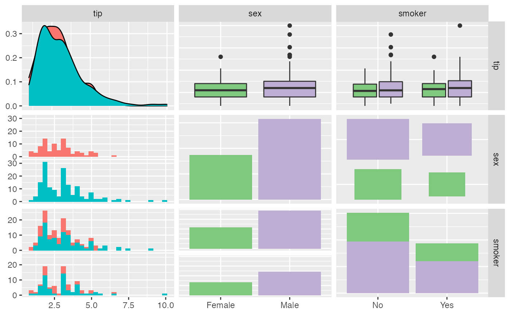
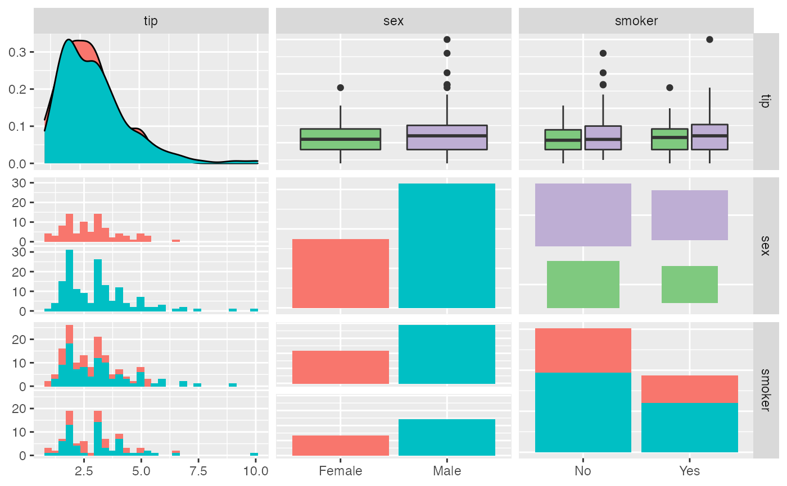

This operator allows you to add ggplot2 objects to a ggmatrix object.
# S3 method for gg +(e1, e2) add_to_ggmatrix(e1, e2, location = NULL, rows = NULL, cols = NULL)
Arguments
| e1 | An object of class |
|---|---|
| e2 | A component to add to |
| location |
|
| rows | numeric vector of the rows to be used. Will be used with |
| cols | numeric vector of the cols to be used. Will be used with |
Details
If the first object is an object of class ggmatrix, you can add
the following types of objects, and it will return a modified ggplot2
object.
theme: update plot themescale: replace current scalecoord: override current coordinate system
The + operator completely replaces elements
with elements from e2.
add_to_ggmatrix gives you more control to modify
only some subplots. This function may be replaced and/or removed in the future. 
See also
Examples
# small function to display plots only if it's interactive p_ <- GGally::print_if_interactive data(tips, package = "reshape") pm <- ggpairs(tips[, 2:4], ggplot2::aes(color = sex)) ## change to black and white theme pm + ggplot2::theme_bw()#>#>#>#>## change to custom theme p_(pm + ggplot2::theme(panel.background = ggplot2::element_rect(fill = "lightblue")))#>#>## add a list of information extra <- list(ggplot2::theme_bw(), ggplot2::labs(caption = "My caption!")) p_(pm + extra)#>#>## modify scale p_(pm + scale_fill_brewer(type = "qual"))#>#>## only first row p_(add_to_ggmatrix(pm, scale_fill_brewer(type = "qual"), rows = 1:2))#>#>## only second col p_(add_to_ggmatrix(pm, scale_fill_brewer(type = "qual"), cols = 2:3))#>#>## only to upper triangle of plot matrix p_(add_to_ggmatrix( pm, scale_fill_brewer(type = "qual"), location = "upper" ))#>#>